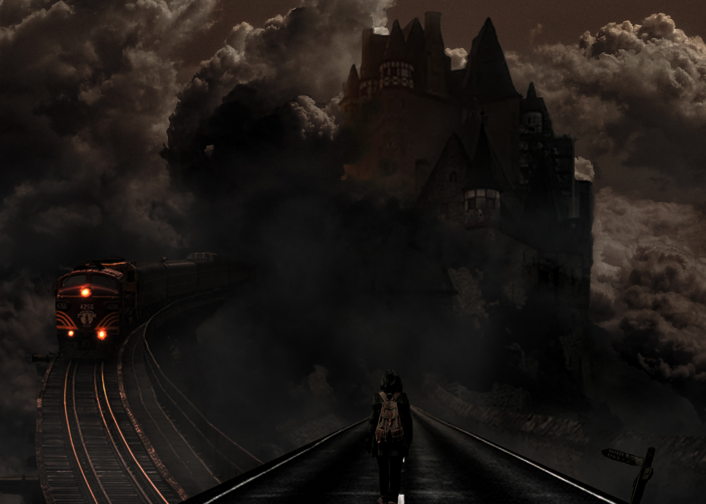
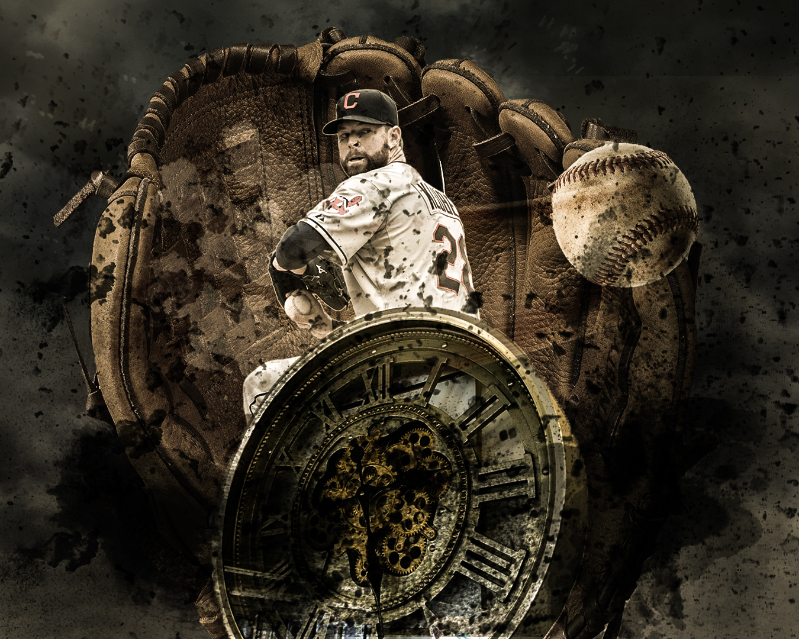
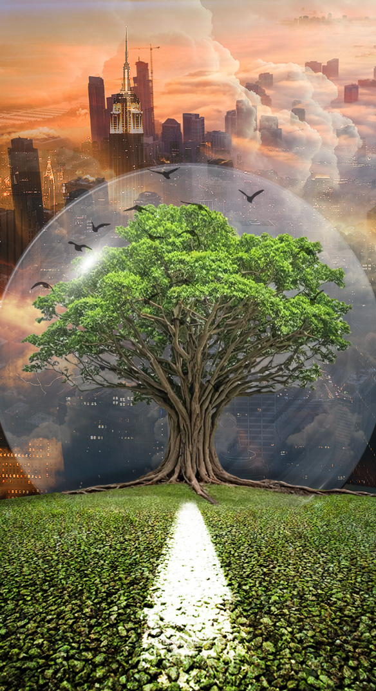
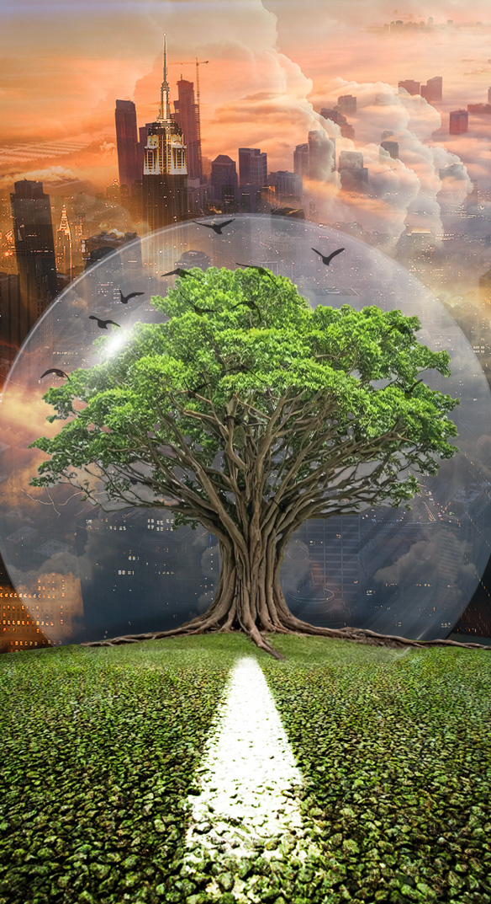
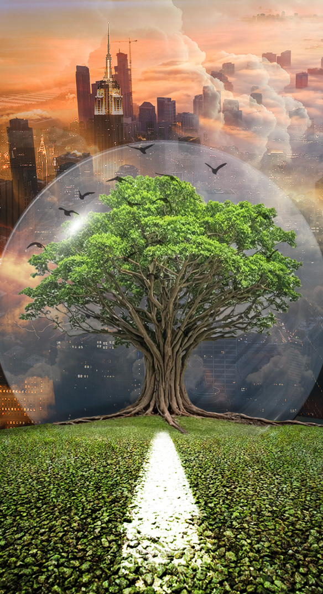

Fotomanipulacje
Fotomanipulacje - wykonane od zera samemu, korzystając z dostępnych w internecie źródeł (wycinane, kopiowane, zmieniane barwy)
Prace wykonane w programie Adobe Photoshop.
Z chęcią wykonam dla Ciebie fotomanipulację na dowolny temat gotową do opublikowania w social mediach / na stronie internetowej



 

